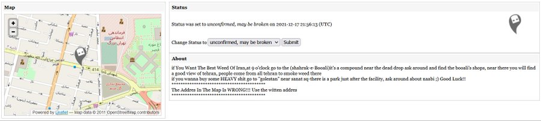

توی فیلم ها دیدید که مثلا یه نفر یه کتاب که داخلش اطلاعاتی مخفی شده رو تو یه ایستگاه اتوبوس میذاره و یه نفر دیگه اون رو برمیداره؟ به این روش dead drop میگن! حالا یه نفر به نام Aram Bartholl چند سال پیش یه پروژه ای رو شروع کرده به نام USB dead drop
تو این روش یه فلش درایو رو داخل دیوار، سنگ یا … قرار میدن و هر کسی میتونه اطلاعاتی رو داخلش بریزه یا برداره. تا الان 2236 فلش درایو که حجمشون به 69073 گیگابایت میرسه به این شبکه اضافه شده. مشخصات تمام dead drop ها رو میتونید در سایتش مشاهده کنید :
حالا نکته بامزه چیه؟ تو ایران فقط یه dead drop داریم! حالا خودتون بخونید توی توضیحاتش چی نوشته

این توییت رو ۷ سپتامبر ۲۰۲۲ نوشتم :
nb.neighbours()
| title | date | |
|---|---|---|
| prev | مرکز هندسی (centroid) تهران کجاست؟ | ۱۴۰۲/۰۹ |
| next | الملک، تحلیل لحظهای بازار مسکن | ۱۴۰۲/۰۹ |